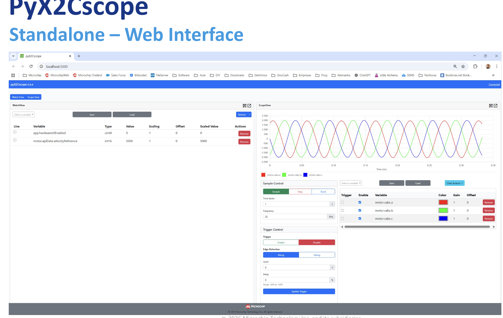
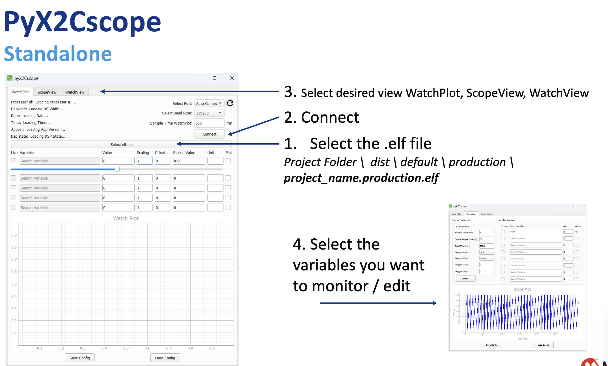
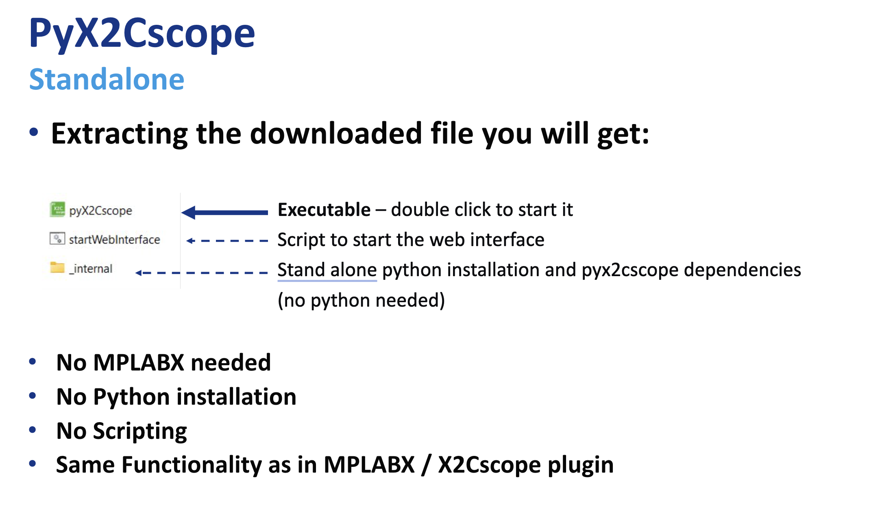
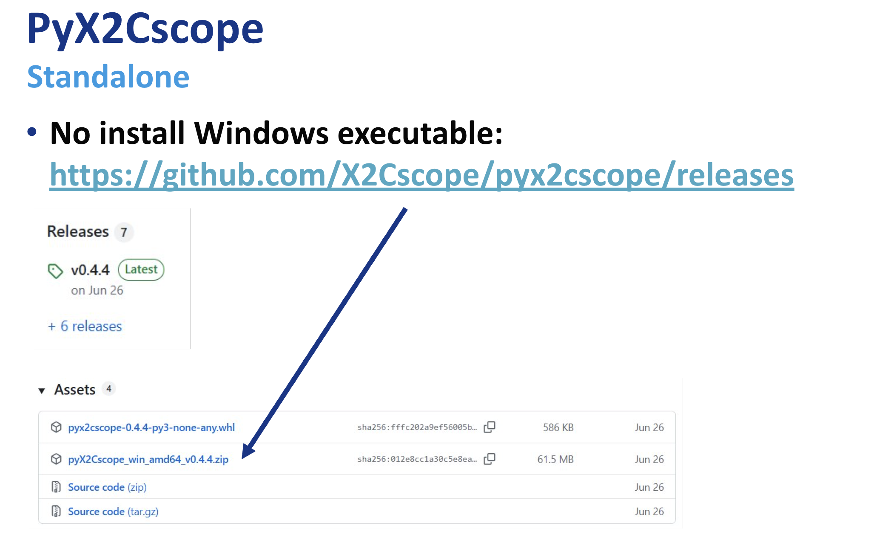

Motor Side (Device Under Test)
These HEX files target the motor-side control DIM installed on the MCLV-48V-300W Development Board (EV18H47A). They are used to showcase different motor-control algorithms on the dyno.
2.2.5 Monitor motor behavior with pyX2Cscope
To view motor behavior on the DUT side, you can use pyX2Cscope through Python. There are also standalone apps you can download and run directly without installing anything beyond the app itself. To download the Standlaone App this is the up-to-date link: pyX2Cscope releases.
Tip
To actually being able to monitor the board, you will need to load to pyX2Cscope the .elf file related to the project that is loaded to the board. You can find the .elf files in the production dist folder for the project currently loaded on the board. All motor control examples by Microchip are already compatible with X2Cscope, so the only thing you need to do is program the board, and load the .elf file.
Here is a good video showing how to use X2Cscope with some code: Video Tutorial Example using motorBench® Development Suite.
 pyX2Cscope Standalone Web Interface |
 pyX2Cscope Standalone App |
 Downloading and using pyX2Cscope Standalone |
 Downloading and using pyX2Cscope Standalone (2) |
{kind=link}
{kind=link}
{kind=link}
{kind=link}
Example DIM: dsPIC33CK256MP508 Motor Control DIM (EV62P66A) https://www.microchip.com/en-us/development-tool/ev62p66a
HEX Location
motor_ACT57BLF02/mclv48v300w_dim_hex/doc/standalone/
Downloads
Algorithm Notes
DIM mapping:
Single-shunt demo runs on the dsPIC33AK128MC106 DIM.
ZS/MT and X2C demos run on the dsPIC33CK256MP508 DIM.
Single-shunt current measurement (MCAF R8):
Samples the DC-link current twice in a single PWM period and reconstructs phase currents based on the inverter switching state.
Requires a dedicated, high-priority ADC ISR and a minimum switching-state window (t_sample + dead time).
For estimators other than ZS/MT, use single update in Dual Edge Center Aligned PWM mode.
Zero-Speed / Maximum Torque (ZS/MT) Estimator
ZS/MT is a sensorless position and speed estimation algorithm specifically designed to operate where back-EMF based estimators fail, at zero and ultra-low speeds.
Operating Principle - High-Frequency Signal Injection
Unlike PLL-type estimators, ZS/MT is intrusive: it injects a high-frequency excitation voltage into the stator and measures the motor’s response. This leverages motor saliency to determine rotor angle even at standstill.
Motor Requirements (Saliency)
ZS/MT requires a motor with significant Ld != Lq saliency. It is thus primarily intended for IPMSM machines, where q-axis inductance is notably higher than d-axis inductance.
Startup Sequence - IPC for Zero-Speed Torque Production
To deliver torque from standstill, ZS/MT uses a startup procedure termed “ZS/MT + Initial Position Correction (IPC)”, allowing the controller to correctly align the stator field before any mechanical motion begins.
Hybrid Operation - Low-Speed to High-Speed Transition
Because the injected signal consumes voltage headroom, ZS/MT cannot achieve the absolute maximum speed by itself. In practice, it is combined with a back-EMF estimator (for example, PLL) using a hybrid scheme (for example, “Minotaur hard-switch”) to allow:
ZS/MT for 0-to-low-speed operation
PLL for mid-to-high-speed operation
Tuning and Configuration Parameters
Reference hardware: https://www.microchip.com/en-us/development-tool/ev18h47a